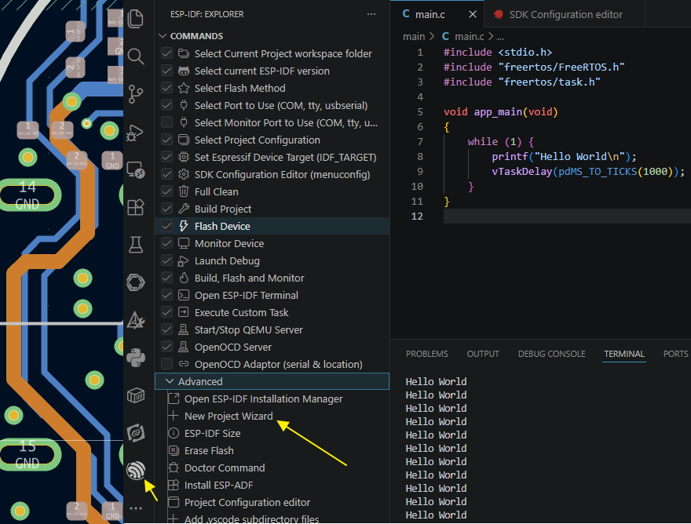
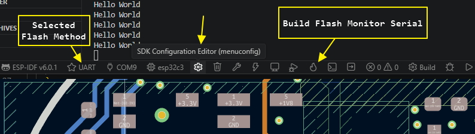

Target Project Connect BNO055 Sensor with XIAO ESP32-C3
C:\Users\tebun\BNO055IMU:
First need to install ESP-IDF Extension for Visual Studio Code. Then create a new project with a template. There is only one template for ESP32-C3.

Copilot can create a simple "Hello World" project. After compilation flashing can be problematic. Select proper COM port and flashing tool. Launch the menuconfig from the extension status bar. Then select the proper COM port and flashing tool.

Copilot Sonnet 4.6 prompt to read BNO055 and BMP280
I connect DFRobot BNO055 10Dof Module with XIAO ESP32-C3 as SCL to D4 and SDA to D5. According to DFRobot document fro https://wiki.dfrobot.com/sen0253/docs/23843 it uses Arduino Library, But I am using ESP-IDF. So I want to create my own Library for ESP-IDF and read data from BNO055 module. The module contains 2 sensor, BNO055 and BMP280. I want to read both sensor data. First create the library.
It created the library files

After compling and flashing the project, I can read the sensor data from the serial monitor.
===== BNO055 =====
Euler | Heading: 308.19° Roll: 16.06° Pitch: -33.88°
Quat | w: 0.8528 x: 0.3183 y: -0.0083 z: 0.4139
Accel | x: 267.0 y: 522.0 z: 778.0 (mg)
Gyro | x: -0.12 y: -0.06 z: 0.00 (dps)
Mag | x: 4.75 y: -7.56 z: -36.19 (µT)
Calib | sys:3 gyr:3 acc:0 mag:2 (3=fully cal)
===== BMP280 =====
Temp | 30.50 °C
Press | 100487 Pa (1004.87 hPa)
Alt | 70.00 m (sea-level ref: 101325 Pa)
BNO055 has a 32bit processor to fusion sensor data and then output the results.
DFRobot web article
From Copilot, the Euler value is like a processed value for human readable format. Euler angles can be imagined as three separate rotations around the X, Y, and Z axes. More like a compass heading, roll and pitch. However, they can suffer from a problem called gimbal lock, where you lose one degree of freedom in certain orientations. So it is better to use Quaternion values for orientation or math calculation. A valid quaternion must satisfy:
w² + x² + y² + z² = 1.0